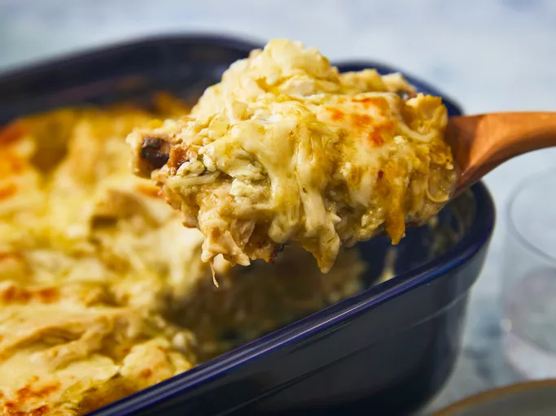

Enchilada Casserole

Description
Enchilada Casserole is a comforting and easy-to-make dish, perfect for family dinners or potlucks.
This casserole features layers of seasoned beef, enchilada sauce, and melted cheese, all baked to perfection.
Serve it hot for a delicious and satisfying meal that combines the bold flavors of Mexican cuisine with the convenience of a casserole.
Ingredients:
- 1 pound ground beef
- 1 onion, chopped
- 2 cloves garlic, minced
- 1 can (10 oz) enchilada sauce
- 1 can (10 oz) diced tomatoes with green chilies
- 1 can (15 oz) black beans, drained and rinsed
- 1 can (15 oz) corn, drained
- 10 small corn tortillas, cut into strips
- 2 cups shredded cheddar cheese
- 1 teaspoon chili powder
- 1 teaspoon cumin
- Salt and pepper to taste
- Fresh cilantro, chopped (optional, for garnish)
Steps:
- Preheat the oven to 375 degrees F (190 degrees C). Grease a 9x13-inch baking dish.
- In a large skillet, cook the ground beef over medium heat until browned. Add the onion and garlic, and cook until softened.
- Stir in the enchilada sauce, diced tomatoes with green chilies, black beans, corn, chili powder, cumin, salt, and pepper. Simmer for 10 minutes.
- Layer half of the tortilla strips in the bottom of the prepared baking dish. Spoon half of the beef mixture over the tortillas, then sprinkle with 1 cup of cheddar cheese.
- Repeat the layers with the remaining tortilla strips, beef mixture, and cheese.
- Bake in the preheated oven until the cheese is melted and bubbly, about 20-25 minutes.
- Garnish with fresh cilantro if desired, and serve hot.